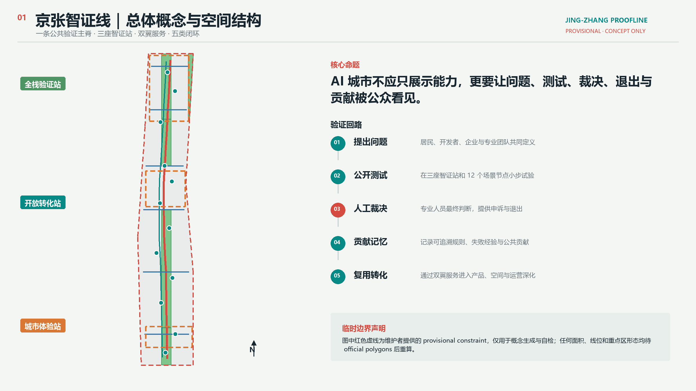
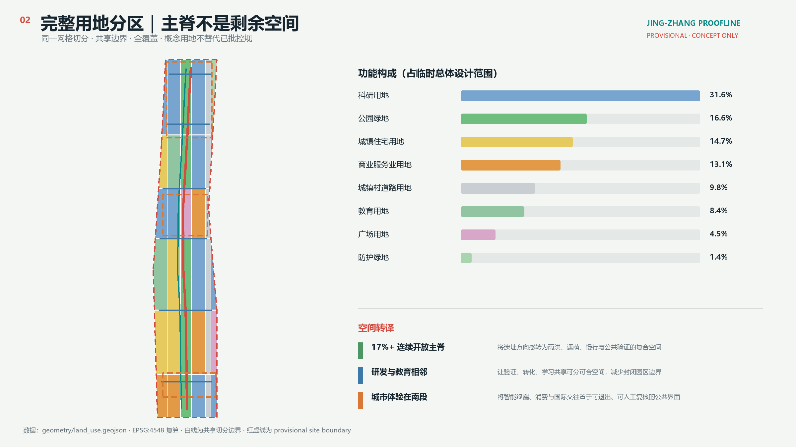
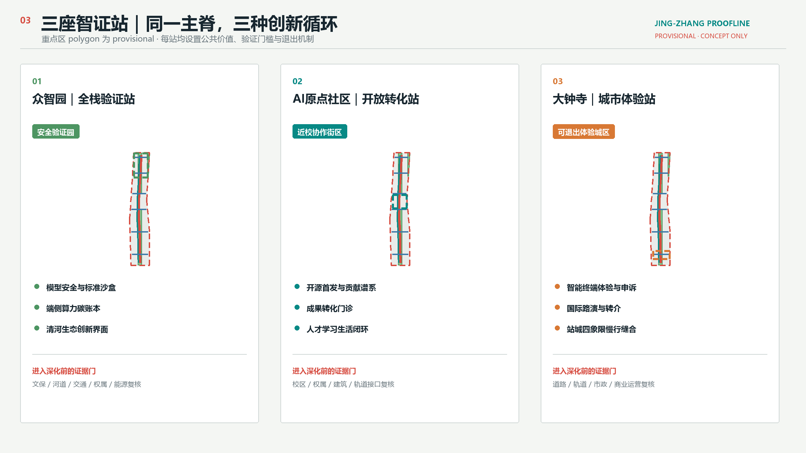
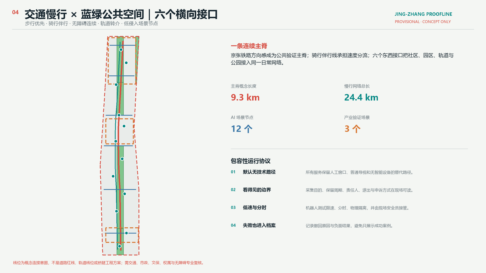
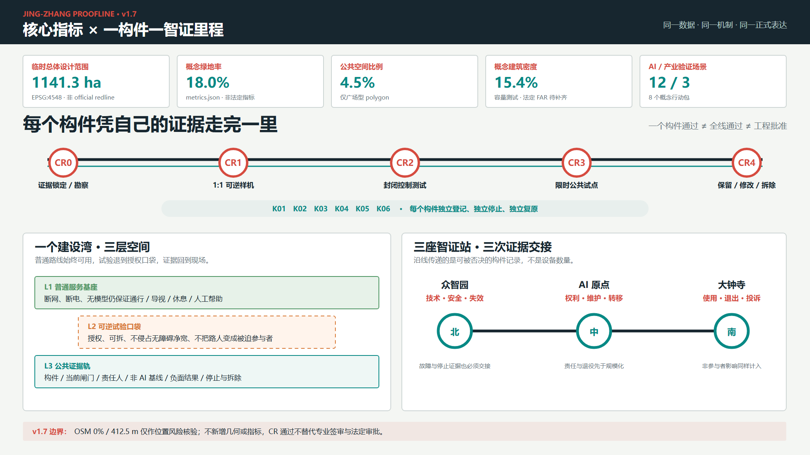

众智园安全验证园
- 模型安全与标准沙盒
- 端侧算力碳账本
- 清河生态创新界面
把京张铁路的站点与里程语法转译为一条可提出问题、公开测试、人工裁决、记录贡献、复用转化的城市公共基础设施。

统筹研究范围组织生态与机制；总体设计范围用完整用地分区、建筑容量、交通慢行、蓝绿公共空间和分期表达；三处重点区验证差异化落地。


不同于同质化“AI 园区”，三处片区分别把可信测试、开放转化和城市体验做成可进入、可退出、可审计的空间循环。
全国—北京—海淀统计、官方开放目录和开放许可测绘分别承担尺度背景、待核验接口与风险交叉检查；全部限制随数字展示，不进入 metrics，也不悄然改变 geometry。
海淀创新供给已高度集聚，方案因此转向标准验证、失败记录、知识产权与产品验证，而不是再做泛孵化展示。
海淀行政尺度 · 不能证明走廊分布或参与意愿补齐全国—北京—海淀尺度梯度，并与交通年报交叉核验全市轨道数量级。
北京市行政尺度 · 不能分配为京张走廊配额或绩效公开材料点名存量资产、实验室与特种设备安全、知识产权和成果转化需求，AI 原点门诊据此拆成四类预约。
单次公开活动 · 不能推断各高校需求相同或已经合作用于定义线路—学校—站点—无障碍链的后续核验流程；实际 CSV 本轮需登录，尚未读取或定位。
*目录元数据 · 不能证明线路经过项目或形成多少学生客流支持步行、骑行和轨道转介优先，但不下推为京张走廊或某站口客流。
中心城区尺度 · 轨道 / 公交 / 自行车分别为 15.0% / 8.9% / 22.3%健康场景只做经核验的既有机构导航与人工转介，不以 AI 替代诊断，也不据此新增设施。
海淀行政尺度 · 不能证明走廊可达性与服务容量独立重跑与 Issue #846 一致：已测绘遗址公园不与 PROV-SITE-001 相交；本轮只登记差异并冻结 geometry。
ODbL 背景证据 · 不能替代 official polygon 或正式面积站口 15 分钟计数、换乘 OD、非机动车停车占用、无障碍连续性、投诉与冲突基线齐备后，才讨论扩大主脊、体验街、六接口或机器人试点。北京市 27.4 亿件快递和 60 条通学公交目录记录只进入问题清单；骑手、网约车、快递与商业热力仍须具备许可、聚合匿名、走廊覆盖和偏差说明。
该图由 AI 生成，用于表达“技术退后、公共生活在前”的人本尺度，不用于判断现状、边界、建筑、面积或工程可行性。

保留可识别的铁路材料，叠加连续树荫、雨水花园、无障碍休息、人工服务台和低速监督测试。信息界面保持低亮度、可关闭，公共空间不以设备数量衡量“智能”。
步行主脊、骑行伴行线和六个横向接口共同连接轨道、社区、园区与公共空间。任何扩大先经过五类走廊数据门；建筑采用调查先行、保留改造优先的容量原型。

三项产业测试均设置低速或隔离边界、现场责任人和停止条件；公共服务场景不做不可逆画像，保留非技术替代路径。
众智园
公开测试协议、人工裁决、结果可追溯众智园
仅记录设备级聚合能耗，不关联个人小月河翼
低速、分时、物理隔离、现场安全员AI原点社区
贡献署名可撤回，发布内容经授权AI原点社区
资产、安全、IP、成果与产品验证分权转介京张主脊
端侧识别、即时删除、人工求助兜底京张主脊
工单聚合展示，居民可申诉和纠错近校界面
未成年人不画像，教师在环社区服务点
仅做机构转介，不诊断、不留存病历社区服务点
模型只做信息导航，专业人员最终复核大钟寺
默认匿名、清晰告知、随时退出京张主脊
授权上传、出处标注、争议内容下架机制不让一份泛化流程替整条线路笼统过关。每个 K01—K06 构件绑定一个位置、一个公共问题和一份自己的证据，依次通过 CR0—CR4。
试验退到口袋里，普通路线始终可用；证据回到公众可读的现场界面。
同一构件沿线移动的不是设备，而是越来越完整、仍可被否决的智证里程记录。
核对权属、地形现状、文保、交通无障碍、树土水、市政消防和运营责任；预登记实际路线上的风热与遮荫观察。
重大冲突或责任不清：不进样机在授权场地用被动、离线、可拆构件走查，并记录几何版本、观察条件与未覆盖情形。
绊倒、眩光、积水、风热或检修失败：返工物理边界、人工接管、急停、最小数据和事件档案同时成立。
无法安全降级：停测许可、起止、责任人、基线、告知退出、人工替代和每日闭场齐备。
严重事件或无人值守：立即停止公开正负结果、分布影响和维护成本；恢复场地、回收材料、删除数据。
保留不等于批准建设断电断网仍提供方向、开放状态、转介和退出。
错误内容先覆盖，侵占通路即移除连续通行、轮椅并坐与人工服务；树荫和行人风热按条件观察。
净宽、稳定、风热、遮荫或维护失效即关闭先测土壤、入渗、污染、溢流、边缘安全和维护。
积水、污染或市政冲突即旁通被动信息板为基线，屏幕低亮、可断开、可拆除。
隐私、电气、权利或责任失效即关机仅限授权控制场地，低速分时、物理分隔、现场监护。
首次安全关键故障即隔离并复核独立可逆结构并列呈现来源、失败记录和撤回入口。
未清权或损伤遗产本体即隐藏 / 拆除visual/assets/construction-readiness.json。上游规则、公开资料、现场缺口和使用风险触发更新；每轮都明确受影响成果、采用 / 调整 / 停止结论和下一次复核条件。
visual/assets/participation.json 记录本案推导、Issue #846 / 已合并 PR #850 / PR #842 影响、采用 / 拒绝边界、变更触发器和下一次检查命令。结构化数据是权威层；图片、PDF 与 HTML 是同版解释层。任务覆盖回到矩阵逐项复核，每道 CR 闸门只推进一个具名构件；PASS 仅说明包可进入评审。

正式任务、行政尺度背景、官方目录、开放许可交叉核验与临时空间资料严格分层；限制与数字同时可见。